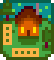
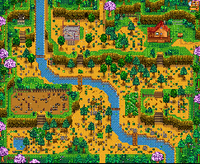

Da Stardew Valley Wiki.

Area di selezione delle mappe nella creazione del personaggio .
- Vedi anche: Casupola, Posizioni casupola
Ci sono sette diverse Mappe della fattoria tra cui scegliere in Stardew Valley. Ciascuna mappa offre una diversa disposizione della fattoria, offrendo diversi vantaggi e favorendo specifiche abilità. Quando si inizia il gioco si può scegliere solo una mappa e non può essere cambiata.
La fattoria standard offre più spazio per piantare colture e allevare animali. Le altre fattorie contengono meno spazio, ma offrono diversi benefici, di cui:
- La Fattoria Fluviale favorisce la Pesca
- La Fattoria Silvestre favorisce la Raccolta Selvatica
- La Fattoria in collina favorisce l'Estrazione
- La Fattoria Desolata favorisce il Combattimento
- La Fattoria quattro-cantoni offre vantaggi rispetto alle altre mappe favorendo la modalità Multigiocatore
- La Fattoria costiera offre oggetti extra e favorisce Pesca e Raccolta Selvatica, ma scoraggia la Fattoria andando avanti con il gioco.
L'interno della fattoria è decorato in linea con il tema della mappa scelto. Questo include mobilia, carta da parati e pavimentazione. L'esterno della casa è lo stesso indipendentemente dalla mappa scelta.
C'è in tutte le mappe un edificio abbandonato che più tardi potrà diventare la Serra. Una volta riparata, può essere spostata andando alla Bottega del falegname o alla Torre del Mago.
Mappe
| Nome
|
Mappa
|
Descrizione
|
Abilità associate
|

Fattoria Comune
|

|
- Gran parte di questa mappa è terreno della fattoria, ideale per le colture e gli animali.
- Il numero di caselle arabili in questa mappa è 3427, con 235 caselle non arabili ma su cui si può costruire.
- L'area rettangolare contigua più grande è di 63 x 31 (1953) caselle.
|
 Fattoria Fattoria
|

Fattoria Fluviale
|

|
- Gran parte di questa mappa è acqua. La Pesca è praticabile in questa fattoria.
- il 70% delle volte, i giocatori cattureranno i pesci fluviali della città, ovvero i pesci che si trovano a Pelican Town.
- il 30% delle volte, i giocatori cattureranno pesci da laghetto, ovvero i pesci che si trovano nel laghetto nella Foresta Linfabrace.
- L'acqua riduce in modo significante il quantitativo di terreno coltivabile.
- Il numero di caselle arabili in questa mappa è 1578, con 516 non arabili ma su cui si può costruire.
|
 Pesca Pesca
|

Fattoria silvestre
|

|
- Il bordo della fattoria è composta da alberi e fogliame, proprio come nel Bosco Segreto.
- Molti cespugli possono essere trovati in questa mappa, inclusi i cespugli di bacche.
- Nelle radure ad ovest compaiono 8 Ceppi grandi (Legno duro) rinnovabili, i raccolti selvatici stagionali ed Erbacce uniche che fanno cadere sempre Semi misti. I possibili raccolti selvatici sono:[1]
- Durante la pesca:[2]
- il 5% delle volte (influenzato dalla fortuna giornaliera), i giocatori cattureranno il Saltaboschi. La formula esatta è 0,05 + fortuna giornaliera. Ciò significa che se la fortuna giornaliera è pari o inferiore a -0,05, non ci sono possibilità di catturare un Saltaboschi. Con la massima fortuna (0,125, possibile solo con l'Amuleto speciale), la probabilità di catturarlo è del 17,5%.
- il 45% delle volte, i giocatori cattureranno pesci da laghetto, ovvero i pesci che si trovano nel laghetto nella Foresta Linfabrace.
- Altrimenti, i giocatori cattureranno solo spazzatura.
- Stagni e aree erbose aggiuntivi riducono l'area coltivabile complessiva.
- Il numero di caselle arabili in questa mappa è 1413, con 1490 non arabili ma su cui si può costruire.
|
 Raccolta selvatica Raccolta selvatica
|

Fattoria in Collina
|

|
- Sulla cima più a sud compaiono delle pietre, filoni di minerali grezzi e di Geodi che variano a seconda del livello di Estrazione del giocatore. Se la cava della fattoria viene sgomberata, di solito si rigenerano 7-13 oggetti ogni 4 giorni, che sembra essere il giorno ottimale per sgomberare la cava della fattoria. Le aree di estrazione possono essere a volte ostacolate da Ceppi Grandi, Tronchi Grandi o da Massi che rendono impossibile l'accesso finchè il giocatore non avrà gli attrezzi giusti.
- Scogliere e ruscelli aggiuntivi riducono l'area coltivabile complessiva.
- Durante la pesca:[2]
- il 50% delle volte, i giocatori cattureranno pesci fluviali della foresta, ovvero i pesci che si trovano nel fiume della Foresta Linfabrace.
- il 50% delle volte, i giocatori cattureranno solo spazzatura.
- Il numero di caselle arabili in questa mappa è 1648, con 930 non arabili ma su cui si può costruire.
|
 Estrazione Estrazione
|

Fattoria Desolata
|

|
- I Mostri compaiono di notte (sulla base del livello di Combattimento del giocatore).
In questa mappa compaiono più Golem selvatici rispetto ad altre fattorie con generazione di mostri abilitata. Vedi Opzioni avanzate per maggiori informazioni.
- Durante la pesca:[2]
- il 35% delle volte, i giocatori cattureranno pesci lacustri, ovvero i pesci che si trovano nel lago nelle montagne.
- il 65% delle volte, i giocatori cattureranno solo spazzatura.
- Scogliere e stagni aggiuntivi riducono l'area coltivabile complessiva.
- Il numero di caselle arabili in questa mappa è 2131, con 444 non arabili ma su cui si può costruire.
|
 Combattimento Combattimento
|

Fattoria quattro-cantoni
|

|
- L'area coltivabile è divisa da scogliere in quattro aree distinte, ognuna delle quali richiama i tratti delle altre mappe.
- In alto a sinistra: Fattoria Silvestre. Questo quadrante include una piccola zolla erbosa che contiene un Ceppo grande e qui le erbacce possono trasformarsi nelle stesse erbacce uniche che lasciano sempre cadere semi misti come nella Fattoria Silvestre.
- In alto a destra: Fattoria Comune. Questo quadrante include la maggior parte dello spazio coltivabile.
- In basso a sinistra: questo quadrante ha uno stagno o un lago. Il giocatore ha il 50% di possibilità di catturare dei pesci da laghetto, come quelli che si trovano nel laghetto nella Foresta Linfabrace.[2]
- In basso a destra: Fattoria in Collina. Questo quadrante contiene una piccola cava in cui compaiono rocce e filoni di minerali grezzi e geodi in base al livello di Estrazione del giocatore.
- Scogliere e stagni aggiuntivi riducono l'area coltivabile complessiva.
- Il numero di caselle arabili in questa mappa è 2952.
|
 Multigiocatore Multigiocatore
|

Fattoria costiera
|

|
- Ottima per raccolta selvatica e pesca e molto spazio all'aperto. A volte, delle casse di rifornimenti arrivano a riva.
- Possono comparire sia raccolti selvatici della foresta che della spiaggia.
- Gli irrigatori non funzionano su terreno sabbioso.
- Destinata a "giocatori esperti", non come prima fattoria.
- Il numero di caselle arabili in questa mappa è 2700, con 1928 non arabili ma su cui si può costruire.
- C'è uno spiazzo di 202 caselle (10x20 più 2) dove possono essere posizionati gli irrigatori.
- Durante la pesca:[2]
- il 15% delle volte, i giocatori cattureranno Alga marina.
- il 5.1% delle volte, i giocatori cattureranno una Ostrica, Corallo, Cozza o Tellina. La probabilità è la stessa per tutti gli oggetti.
- il 52.73% delle volte, i giocatori cattureranno pesci oceanici, ovvero i pesci che si trovano alla spiaggia.
- il 27.17% delle volte, i giocatori cattureranno solo spazzatura.
|
Raccolta selvatica
Pesca
|

Fattoria con pascolo
|

|
|
Fattoria
|
Riferimenti
- ↑ Vedi Farm::DayUpdate nel codice di gioco.
- ↑ 2,0 2,1 2,2 2,3 2,4 2,5 Il pesce che può essere catturato su ciascuna delle mappe della fattoria è determinato da Farm::getFish e Farm::getFishingLocation nel codice di gioco, così come il codice della mappa della fattoria standard in GameLocation::getFish e file dati Content\Fish.xnb.
Storia
- 1.0: Introdotta Fattoria Comune.
- 1.1: Aggiunte le mappe della fattoria: Silvestre, in Collina, Fluviale e Desolata.
- 1.4: Aggiunta la mappa Fattoria quattro-cantoni.
- 1.5: Aggiunta la mappa Fattoria costiera. Modifiche all'interfaccia della chat, che hanno eliminato un errore che impediva il posizionamento delle caselle di pavimentazione vicino alla Foresta Linfabrace. La serra ora può essere spostata.